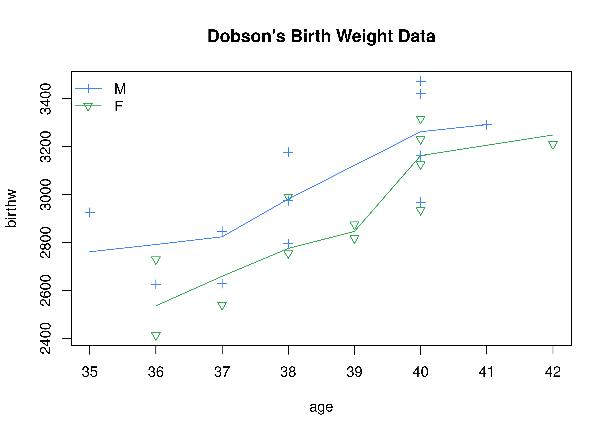
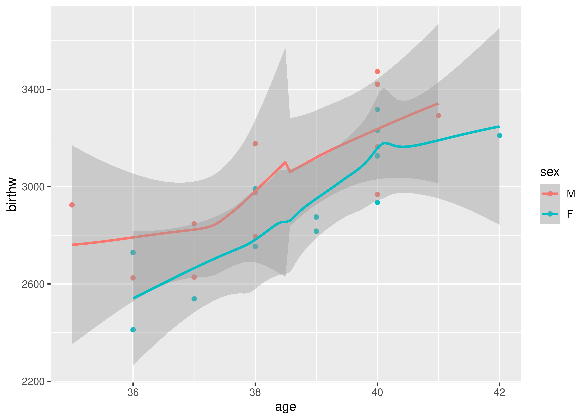

第 26 章 线性模型
There’s probably some examples, but there are some examples of people using
solve(t(X) %*% W %*% X) %*% W %*% Yto compute regression coefficients, too.— Thomas Lumley 68
26.1 方差分析
I was profoundly disappointed when I saw that S-PLUS 4.5 now provides “Type III” sums of squares as a routine option for the summary method for aov objects. I note that it is not yet available for multistratum models, although this has all the hallmarks of an oversight (that is, a bug) rather than common sense seeing the light of day. When the decision was being taken of whether to include this feature, “because the FDA requires it” a few of my colleagues and I were consulted and our reply was unhesitatingly a clear and unequivocal “No”, but it seems the FDA and SAS speak louder and we were clearly outvoted.
— Bill Venables 69
方差分析、 A/B Test 和多重比较多用于互联网数据 lme 的特例
26.2 单因素方差分析
chickwts 不同的喂食方式对体重的影响
boxplot(weight ~ feed, data = chickwts, col = "lightgray",
varwidth = TRUE, notch = TRUE, main = "chickwt data",
ylab = "Weight at six weeks (gm)")## Warning in (function (z, notch = FALSE, width = NULL, varwidth = FALSE, : some
## notches went outside hinges ('box'): maybe set notch=FALSE## Analysis of Variance Table
##
## Response: weight
## Df Sum Sq Mean Sq F value Pr(>F)
## feed 5 231129 46226 15.365 5.936e-10 ***
## Residuals 65 195556 3009
## ---
## Signif. codes: 0 '***' 0.001 '**' 0.01 '*' 0.05 '.' 0.1 ' ' 1
par(opar)sleep
## Student's paired t-test 成对样本的 t 检验
with(sleep,
t.test(extra[group == 1],
extra[group == 2], paired = TRUE))##
## Paired t-test
##
## data: extra[group == 1] and extra[group == 2]
## t = -4.0621, df = 9, p-value = 0.002833
## alternative hypothesis: true difference in means is not equal to 0
## 95 percent confidence interval:
## -2.4598858 -0.7001142
## sample estimates:
## mean of the differences
## -1.58
## The sleep *prolongations*
sleep1 <- with(sleep, extra[group == 2] - extra[group == 1])
summary(sleep1)## Min. 1st Qu. Median Mean 3rd Qu. Max.
## 0.00 1.05 1.30 1.58 1.70 4.60
stripchart(sleep1, method = "stack", xlab = "hours",
main = "Sleep prolongation (n = 10)")
boxplot(sleep1, horizontal = TRUE, add = TRUE,
at = .6, pars = list(boxwex = 0.5, staplewex = 0.25))另一个关于测量光速的例子，带分类变量的
michelson <- transform(morley,
Expt = factor(Expt), Run = factor(Run))
xtabs(~ Expt + Run, data = michelson) # 5 x 20 balanced (two-way)## Run
## Expt 1 2 3 4 5 6 7 8 9 10 11 12 13 14 15 16 17 18 19 20
## 1 1 1 1 1 1 1 1 1 1 1 1 1 1 1 1 1 1 1 1 1
## 2 1 1 1 1 1 1 1 1 1 1 1 1 1 1 1 1 1 1 1 1
## 3 1 1 1 1 1 1 1 1 1 1 1 1 1 1 1 1 1 1 1 1
## 4 1 1 1 1 1 1 1 1 1 1 1 1 1 1 1 1 1 1 1 1
## 5 1 1 1 1 1 1 1 1 1 1 1 1 1 1 1 1 1 1 1 1
plot(Speed ~ Expt, data = michelson,
main = "Speed of Light Data", xlab = "Experiment No.")## Df Sum Sq Mean Sq F value Pr(>F)
## Run 19 113344 5965 1.105 0.36321
## Expt 4 94514 23629 4.378 0.00307 **
## Residuals 76 410166 5397
## ---
## Signif. codes: 0 '***' 0.001 '**' 0.01 '*' 0.05 '.' 0.1 ' ' 1## Analysis of Variance Table
##
## Model 1: Speed ~ Expt
## Model 2: Speed ~ Run + Expt
## Res.Df RSS Df Sum of Sq F Pr(>F)
## 1 95 523510
## 2 76 410166 19 113344 1.1053 0.3632ToothGrowth 维生素 C 对牙齿增长的关系
coplot(len ~ dose | supp, data = ToothGrowth, panel = panel.smooth,
xlab = "ToothGrowth data: length vs dose, given type of supplement")26.3 双因素方差分析
?lm mlm
26.5 核学习
基于核的机器学习算法 kernlab
David Meyer 基于 libsvm 开发了 e1071 包，基于核方法实现了非线性回归分类算法
线性模型、逻辑回归模型、多项逻辑回归模型、神经网络、朴素贝叶斯、分类回归树等模型和算法借助 Shiny 整合在一起 https://radiant-rstats.github.io/docs/ 和 http://radiant-rstats.github.io/radiant.model/
26.6 通用机器学习
| 函数 | R 包 | 代码 |
|---|---|---|
lda |
MASS |
predict(obj) |
glm |
stats |
predict(obj, type = "response") |
gbm |
gbm |
predict(obj, type = "response", n.trees) |
mda |
mda |
predict(obj, type = "posterior") |
rpart |
rpart |
predict(obj, type = "prob") |
Weka |
RWeka |
predict(obj, type = "probability") |
logitboost |
LogitBoost |
predict(obj, type = "raw", nIter) |
pamr.train |
pamr |
pamr.predict(obj, type = "posterior") |
26.7 理论基础
\[\begin{align} Y &= X \beta + \epsilon \\ X^{\top}Y &= X^{\top}X\beta \\ \hat{\beta} &= (X^{\top}X)^{-1}X^{\top}Y \\ \hat{Y} &= X(X^{\top}X)^{-1}X^{\top}Y \\ \hat{\sigma^2} &= \frac{\|Y - \hat{Y}\|_2}{n - rk(X)} \\ & = \frac{\|(I - X(X^{\top}X)^{-1}X^{\top})Y\|_2}{n - rk(X)}\\ & = \frac{Y^{\top}(I - X(X^{\top}X)^{-1}X^{\top})Y}{n - rk(X)} \end{align}\]
26.8 多重多元线性回归
多个响应变量和协变量71
多重多元线性回归 multiply linear regression lm R 版本 3.6 以上 PR#17407
fit_mtcars <- lm(cbind(mpg, qsec) ~ 1, data = mtcars, offset = cbind(wt, wt * 2))
summary(fit_mtcars)## Response mpg :
##
## Call:
## lm(formula = mpg ~ 1, data = mtcars, offset = cbind(wt, wt *
## 2))
##
## Residuals:
## Min 1Q Median 3Q Max
## -11.897 -4.947 -1.316 2.984 15.192
##
## Coefficients:
## Estimate Std. Error t value Pr(>|t|)
## (Intercept) 16.873 1.219 13.85 8.1e-15 ***
## ---
## Signif. codes: 0 '***' 0.001 '**' 0.01 '*' 0.05 '.' 0.1 ' ' 1
##
## Residual standard error: 6.893 on 31 degrees of freedom
##
##
## Response qsec :
##
## Call:
## lm(formula = qsec ~ 1, data = mtcars, offset = cbind(wt, wt *
## 2))
##
## Residuals:
## Min 1Q Median 3Q Max
## -4.6842 -2.0793 -0.1693 2.2693 5.1857
##
## Coefficients:
## Estimate Std. Error t value Pr(>|t|)
## (Intercept) 11.4142 0.5076 22.49 <2e-16 ***
## ---
## Signif. codes: 0 '***' 0.001 '**' 0.01 '*' 0.05 '.' 0.1 ' ' 1
##
## Residual standard error: 2.871 on 31 degrees of freedom26.9 回归诊断
包括线性模型和广义线性模型
Regression Deletion Diagnostics ?influence.measures
library(ggplot2)
library(patchwork)
data("anscombe")
form <- sprintf('y%d ~ x%d', 1:4, 1:4)
fit <- lapply(form, lm, data = anscombe)
plot_lm <- function(i) {
annotate_texts <- c("", "nonlinearity", "outlier", "influential point")
p <- ggplot(data = anscombe, aes_string(x = paste0("x", i), y = paste0("y", i))) +
geom_point() +
geom_abline(intercept = coef(fit[[i]])[1], slope = coef(fit[[i]])[2], color = "red") +
theme_minimal() +
labs(
x = substitute(bold(x[a]), list(a = i)), y = substitute(bold(y[b]), list(b = i)),
title = bquote(bold(R)^2 == .(round(summary(fit[[i]])$r.squared, 3)))
)
p + annotate("text", x = 12, y = 11, label = annotate_texts[i])
}
Reduce("+", lapply(1:4, plot_lm))图 26.1: 线性模型可能在欺骗你
26.10 1977 年美国人口普查
state_data <- data.frame(state.x77, row.names = state.abb)
fit_state <- lm(Life.Exp ~ ., data = state_data)
summary(fit_state)##
## Call:
## lm(formula = Life.Exp ~ ., data = state_data)
##
## Residuals:
## Min 1Q Median 3Q Max
## -1.48895 -0.51232 -0.02747 0.57002 1.49447
##
## Coefficients:
## Estimate Std. Error t value Pr(>|t|)
## (Intercept) 7.094e+01 1.748e+00 40.586 < 2e-16 ***
## Population 5.180e-05 2.919e-05 1.775 0.0832 .
## Income -2.180e-05 2.444e-04 -0.089 0.9293
## Illiteracy 3.382e-02 3.663e-01 0.092 0.9269
## Murder -3.011e-01 4.662e-02 -6.459 8.68e-08 ***
## HS.Grad 4.893e-02 2.332e-02 2.098 0.0420 *
## Frost -5.735e-03 3.143e-03 -1.825 0.0752 .
## Area -7.383e-08 1.668e-06 -0.044 0.9649
## ---
## Signif. codes: 0 '***' 0.001 '**' 0.01 '*' 0.05 '.' 0.1 ' ' 1
##
## Residual standard error: 0.7448 on 42 degrees of freedom
## Multiple R-squared: 0.7362, Adjusted R-squared: 0.6922
## F-statistic: 16.74 on 7 and 42 DF, p-value: 2.534e-10
# step(fit_state)26.12 1888 年瑞士生育率分析
1888 年，瑞士开始进入一个人口转变的阶段，从发展中国家的高出生率开始下滑。数据集 swiss 记录了 1888 年瑞士 47 个说法语的省份的生育率和社会经济指标数据，下面是数据集的部分
## Fertility Agriculture Examination Education Catholic
## Courtelary 80.2 17.0 15 12 9.96
## Delemont 83.1 45.1 6 9 84.84
## Franches-Mnt 92.5 39.7 5 5 93.40
## Moutier 85.8 36.5 12 7 33.77
## Neuveville 76.9 43.5 17 15 5.16
....Fertility（生育率，采用常见的标准生育率统计口径）、Agriculture（男性从事农业生产的比例）、Examination（应征者在军队考试中获得最高等级的比例）、Education（应征者有小学以上教育水平的比例）、Catholic（信仰天主教的比例）、Infant.Mortality（婴儿死亡率，仅考虑出生一年内死亡），各个指标都统一标准化为百分比的形式。其中，Examination 和 Education 是 1887 年、1888 年和 1889 年的平均值。瑞士 182 个地区 1888 年及其它年份的数据可从网站获得。
图 26.2: 1888 年瑞士生育率和社会经济指标的关系
fit_swiss <- lm(Fertility ~ . - 1, data = swiss)
summary(fit_swiss)##
## Call:
## lm(formula = Fertility ~ . - 1, data = swiss)
##
## Residuals:
## Min 1Q Median 3Q Max
## -16.8358 -6.3606 -0.5603 6.0585 23.3203
##
## Coefficients:
## Estimate Std. Error t value Pr(>|t|)
## Agriculture 0.11100 0.07424 1.495 0.14233
## Examination 0.44406 0.31435 1.413 0.16514
## Education -0.70674 0.25009 -2.826 0.00719 **
## Catholic 0.11707 0.04860 2.409 0.02046 *
## Infant.Mortality 2.98366 0.31683 9.417 6.53e-12 ***
## ---
## Signif. codes: 0 '***' 0.001 '**' 0.01 '*' 0.05 '.' 0.1 ' ' 1
##
## Residual standard error: 9.893 on 42 degrees of freedom
## Multiple R-squared: 0.9828, Adjusted R-squared: 0.9807
## F-statistic: 478.8 on 5 and 42 DF, p-value: < 2.2e-16
anova(fit_swiss)## Analysis of Variance Table
##
## Response: Fertility
## Df Sum Sq Mean Sq F value Pr(>F)
## Agriculture 1 204039 204039 2084.6865 < 2.2e-16 ***
## Examination 1 16781 16781 171.4556 < 2.2e-16 ***
## Education 1 24 24 0.2454 0.6229
## Catholic 1 4782 4782 48.8556 1.504e-08 ***
## Infant.Mortality 1 8680 8680 88.6858 6.528e-12 ***
## Residuals 42 4111 98
## ---
## Signif. codes: 0 '***' 0.001 '**' 0.01 '*' 0.05 '.' 0.1 ' ' 1Cook 距离 ?plot.lm
X <- as.matrix(swiss[, setdiff(names(swiss), "Fertility")])
Y <- as.matrix(swiss[, "Fertility"])
# beta 的估计
(beta_hat <- solve(a = crossprod(X, X), b = crossprod(X, Y)))## [,1]
## Agriculture 0.1110005
## Examination 0.4440591
## Education -0.7067362
## Catholic 0.1170662
## Infant.Mortality 2.9836617
# Y 的预测 MSE 残差平方和
sigma2_hat <- (t(Y) %*% (diag(rep(1, dim(X)[1])) - X %*% solve(crossprod(X)) %*% t(X)) %*% Y)/(dim(X)[1] - qr(X)$rank)
# RMSE
sqrt(sigma2_hat)## [,1]
## [1,] 9.89318726.13 Intercountry Life-Cycle Savings Data 1960-1970
data("LifeCycleSavings")26.14 Longley’s Economic Regression Data 1947-1962
data("longley")26.15 甲醛的测定
ggplot(data = Formaldehyde, aes(x = carb, y = optden)) +
geom_point() +
theme_minimal()26.16 迈克尔逊光速数据分析
1879 年迈克尔逊光速测量数据，记录了五次实验，每次试验测量 20 次光速，得到表格 26.2
reshape(
data = morley, v.names = "Speed", idvar = "Expt",
timevar = "Run", direction = "wide", sep = ""
) %>%
knitr::kable(.,
caption = "迈克尔逊光速数据",
row.names = FALSE, col.names = gsub("(Speed)", "", names(.)),
align = "c"
)| Expt | 1 | 2 | 3 | 4 | 5 | 6 | 7 | 8 | 9 | 10 | 11 | 12 | 13 | 14 | 15 | 16 | 17 | 18 | 19 | 20 |
|---|---|---|---|---|---|---|---|---|---|---|---|---|---|---|---|---|---|---|---|---|
| 1 | 850 | 740 | 900 | 1070 | 930 | 850 | 950 | 980 | 980 | 880 | 1000 | 980 | 930 | 650 | 760 | 810 | 1000 | 1000 | 960 | 960 |
| 2 | 960 | 940 | 960 | 940 | 880 | 800 | 850 | 880 | 900 | 840 | 830 | 790 | 810 | 880 | 880 | 830 | 800 | 790 | 760 | 800 |
| 3 | 880 | 880 | 880 | 860 | 720 | 720 | 620 | 860 | 970 | 950 | 880 | 910 | 850 | 870 | 840 | 840 | 850 | 840 | 840 | 840 |
| 4 | 890 | 810 | 810 | 820 | 800 | 770 | 760 | 740 | 750 | 760 | 910 | 920 | 890 | 860 | 880 | 720 | 840 | 850 | 850 | 780 |
| 5 | 890 | 840 | 780 | 810 | 760 | 810 | 790 | 810 | 820 | 850 | 870 | 870 | 810 | 740 | 810 | 940 | 950 | 800 | 810 | 870 |
数据集 morley 中光速 Speed 已经编码过了，原始观测速度减去了 299000 (km/sec)，为了展示方便
ggplot(data = morley, aes(x = Expt, y = Speed, group = Expt)) +
geom_boxplot() +
geom_jitter() +
theme_minimal() +
labs(x = "Expt", y = "Speed (km/sec)")图 26.3: 1879 年迈克尔逊光速实验数据
26.17 不同喂食方式对小鸡体重的影响 I
ggplot(data = chickwts, aes(x = feed, y = weight, color = feed)) +
geom_boxplot() +
geom_jitter() +
theme_minimal()图 26.4: 不同喂食方式对小鸡的影响
26.18 不同喂食方式对小鸡体重的影响 II
ggplot(data = ChickWeight, aes(x = Time, y = weight, group = Chick, color = Diet)) +
geom_point() +
geom_line() +
facet_wrap(~Diet) +
theme_minimal()添加趋势线
ggplot(data = ChickWeight,
aes(x = Time, y = weight, group = Diet, colour = Diet)) +
facet_wrap(~Diet) +
geom_jitter() +
stat_summary(fun = "mean", geom = "line", colour = "black") +
theme_minimal() +
labs(
title = "Chick Weight over Time by Diet",
x = "Time (days)",
y = "Weight (grams)"
)26.19 酶的酶联免疫吸附测定
ggplot(data = DNase, aes(x= conc,y= density, color = Run)) +
geom_point() +
theme_minimal()26.20 婴儿的体重随年龄的变化情况
BirthWeight 数据集记录了婴儿的体重随年龄的变化情况，年龄以周为单位计，体重以克为单位计

性别和年龄两个变量，分别是离散型的分类变量和连续型的变量
##
## Call:
## lm(formula = birthw ~ sex + age)
##
## Residuals:
## Min 1Q Median 3Q Max
## -257.49 -125.28 -58.44 169.00 303.98
##
## Coefficients:
## Estimate Std. Error t value Pr(>|t|)
## (Intercept) -1610.28 786.08 -2.049 0.0532 .
## sexF -163.04 72.81 -2.239 0.0361 *
## age 120.89 20.46 5.908 7.28e-06 ***
## ---
## Signif. codes: 0 '***' 0.001 '**' 0.01 '*' 0.05 '.' 0.1 ' ' 1
##
## Residual standard error: 177.1 on 21 degrees of freedom
## Multiple R-squared: 0.64, Adjusted R-squared: 0.6057
## F-statistic: 18.67 on 2 and 21 DF, p-value: 2.194e-05
##
## Correlation of Coefficients:
## (Intercept) sexF
## sexF 0.07
## age -1.00 -0.12
anova(l1)## Analysis of Variance Table
##
## Response: birthw
## Df Sum Sq Mean Sq F value Pr(>F)
## sex 1 76163 76163 2.4279 0.1341
## age 1 1094940 1094940 34.9040 7.284e-06 ***
## Residuals 21 658771 31370
## ---
## Signif. codes: 0 '***' 0.001 '**' 0.01 '*' 0.05 '.' 0.1 ' ' 1##
## Call:
## lm(formula = birthw ~ sex + sex:age)
##
## Residuals:
## Min 1Q Median 3Q Max
## -246.69 -138.11 -39.13 176.57 274.28
##
## Coefficients:
## Estimate Std. Error t value Pr(>|t|)
## (Intercept) -1268.67 1114.64 -1.138 0.268492
## sexF -872.99 1611.33 -0.542 0.593952
## sexM:age 111.98 29.05 3.855 0.000986 ***
## sexF:age 130.40 30.00 4.347 0.000313 ***
## ---
## Signif. codes: 0 '***' 0.001 '**' 0.01 '*' 0.05 '.' 0.1 ' ' 1
##
## Residual standard error: 180.6 on 20 degrees of freedom
## Multiple R-squared: 0.6435, Adjusted R-squared: 0.59
## F-statistic: 12.03 on 3 and 20 DF, p-value: 0.000101
##
## Correlation of Coefficients:
## (Intercept) sexF sexM:age
## sexF -0.69
## sexM:age -1.00 0.69
## sexF:age 0.00 -0.72 0.00
anova(li, l1)## Analysis of Variance Table
##
## Model 1: birthw ~ sex + sex:age
## Model 2: birthw ~ sex + age
## Res.Df RSS Df Sum of Sq F Pr(>F)
## 1 20 652425
## 2 21 658771 -1 -6346.2 0.1945 0.6639##
## Call:
## glm(formula = birthw ~ sex + age, family = gaussian())
##
## Deviance Residuals:
## Min 1Q Median 3Q Max
## -257.49 -125.28 -58.44 169.00 303.98
##
## Coefficients:
## Estimate Std. Error t value Pr(>|t|)
## (Intercept) -1610.28 786.08 -2.049 0.0532 .
## sexF -163.04 72.81 -2.239 0.0361 *
## age 120.89 20.46 5.908 7.28e-06 ***
## ---
## Signif. codes: 0 '***' 0.001 '**' 0.01 '*' 0.05 '.' 0.1 ' ' 1
##
## (Dispersion parameter for gaussian family taken to be 31370.04)
##
## Null deviance: 1829873 on 23 degrees of freedom
## Residual deviance: 658771 on 21 degrees of freedom
## AIC: 321.39
##
## Number of Fisher Scoring iterations: 2
anova(zi)## Analysis of Deviance Table
##
## Model: gaussian, link: identity
##
## Response: birthw
##
## Terms added sequentially (first to last)
##
##
## Df Deviance Resid. Df Resid. Dev
## NULL 23 1829873
## sex 1 76163 22 1753711
## age 1 1094940 21 658771##
## Call:
## glm(formula = birthw ~ sex + age + sex:age, family = gaussian())
##
## Deviance Residuals:
## Min 1Q Median 3Q Max
## -246.69 -138.11 -39.13 176.57 274.28
##
## Coefficients:
## Estimate Std. Error t value Pr(>|t|)
## (Intercept) -1268.67 1114.64 -1.138 0.268492
## sexF -872.99 1611.33 -0.542 0.593952
## age 111.98 29.05 3.855 0.000986 ***
## sexF:age 18.42 41.76 0.441 0.663893
## ---
## Signif. codes: 0 '***' 0.001 '**' 0.01 '*' 0.05 '.' 0.1 ' ' 1
##
## (Dispersion parameter for gaussian family taken to be 32621.23)
##
## Null deviance: 1829873 on 23 degrees of freedom
## Residual deviance: 652425 on 20 degrees of freedom
## AIC: 323.16
##
## Number of Fisher Scoring iterations: 2
anova(zi, zz)## Analysis of Deviance Table
##
## Model 1: birthw ~ sex + age
## Model 2: birthw ~ sex + age + sex:age
## Resid. Df Resid. Dev Df Deviance
## 1 21 658771
## 2 20 652425 1 6346.226.21 火炬松树的生长情况
表 26.3 记录了 14 颗火炬树种子的生长情况
reshape(Loblolly, idvar = "Seed", timevar = "age",
v.names = "height", direction = "wide", sep = "") %>%
knitr::kable(.,
caption = "火炬松树的高度（英尺）随时间（年）的变化",
row.names = FALSE, col.names = gsub("(height)", "", names(.)),
align = "c"
)| Seed | 3 | 5 | 10 | 15 | 20 | 25 |
|---|---|---|---|---|---|---|
| 301 | 4.51 | 10.89 | 28.72 | 41.74 | 52.70 | 60.92 |
| 303 | 4.55 | 10.92 | 29.07 | 42.83 | 53.88 | 63.39 |
| 305 | 4.79 | 11.37 | 30.21 | 44.40 | 55.82 | 64.10 |
| 307 | 3.91 | 9.48 | 25.66 | 39.07 | 50.78 | 59.07 |
| 309 | 4.81 | 11.20 | 28.66 | 41.66 | 53.31 | 63.05 |
| 311 | 3.88 | 9.40 | 25.99 | 39.55 | 51.46 | 59.64 |
| 315 | 4.32 | 10.43 | 27.16 | 40.85 | 51.33 | 60.07 |
| 319 | 4.57 | 10.57 | 27.90 | 41.13 | 52.43 | 60.69 |
| 321 | 3.77 | 9.03 | 25.45 | 38.98 | 49.76 | 60.28 |
| 323 | 4.33 | 10.79 | 28.97 | 42.44 | 53.17 | 61.62 |
| 325 | 4.38 | 10.48 | 27.93 | 40.20 | 50.06 | 58.49 |
| 327 | 4.12 | 9.92 | 26.54 | 37.82 | 48.43 | 56.81 |
| 329 | 3.93 | 9.34 | 26.08 | 37.79 | 48.31 | 56.43 |
| 331 | 3.46 | 9.05 | 25.85 | 39.15 | 49.12 | 59.49 |
图 26.5 火炬树种子基本决定了树的长势，不同种子预示最后的高度，并且在生长期也是很稳定地生长
p <- ggplot(data = Loblolly, aes(x = age, y = height, color = Seed)) +
geom_point() +
geom_line() +
theme_minimal() +
labs(x = "age (yr)", y = "height (ft)")
p
图 26.5: 不同火炬树的生长情况
library(gganimate)
p + transition_reveal(age)26.22 酶促反应的反应速率
Puromycin 酶促反应的反应速度，模型拟合 ?SSmicmen
ggplot(data = Puromycin, aes(x = conc, y = rate, color = state)) +
geom_point() +
geom_line() +
theme_minimal() +
labs(
x = "Substrate concentration (ppm)",
y = "Reaction velocity (counts/min/min)",
title = "Puromycin data and fitted Michaelis-Menten curves"
)26.23 茶碱的药代动力学
ggplot(data = Theoph, aes(x = Time, y = conc, color = Subject)) +
geom_point() +
geom_line() +
facet_wrap(Wt ~ Dose, ncol = 3, labeller = "label_both") +
theme_minimal() +
labs(
x = "Time since drug administration (hr)",
y = "Theophylline concentration (mg/L)",
title = "Observed concentrations and fitted model"
)
Theoph %>%
transform(., wt_dose = paste(Wt, Dose, sep = "~")) %>%
ggplot(., aes(x = Time, y = conc, color = wt_dose)) +
geom_point() +
geom_line() +
theme_minimal() +
labs(
x = "Time since drug administration (hr)",
y = "Theophylline concentration (mg/L)",
title = "Observed concentrations and fitted model"
)
ggplot(data = Theoph, aes(x = Time, y = conc, color = Subject)) +
geom_point() +
geom_line() +
theme_minimal() +
labs(
x = "Time since drug administration (hr)",
y = "Theophylline concentration (mg/L)",
title = "Observed concentrations and fitted model"
)26.24 本章总结
模型永远没完，总是需要自己去构造符合自己需求的模型及其实现，只有自己能够实现，才能在海洋中遨游
This is a bit like asking how should I tweak my sailboat so I can explore the ocean floor.
— Roger Koenker 72
26.25 运行环境
## R version 4.1.1 (2021-08-10)
## Platform: x86_64-pc-linux-gnu (64-bit)
## Running under: Ubuntu 20.04.3 LTS
##
## Matrix products: default
## BLAS: /usr/lib/x86_64-linux-gnu/blas/libblas.so.3.9.0
## LAPACK: /usr/lib/x86_64-linux-gnu/lapack/liblapack.so.3.9.0
##
## locale:
## [1] LC_CTYPE=en_US.UTF-8 LC_NUMERIC=C
## [3] LC_TIME=en_US.UTF-8 LC_COLLATE=en_US.UTF-8
## [5] LC_MONETARY=en_US.UTF-8 LC_MESSAGES=en_US.UTF-8
## [7] LC_PAPER=en_US.UTF-8 LC_NAME=C
## [9] LC_ADDRESS=C LC_TELEPHONE=C
## [11] LC_MEASUREMENT=en_US.UTF-8 LC_IDENTIFICATION=C
##
## attached base packages:
## [1] stats graphics grDevices utils datasets methods base
##
## other attached packages:
## [1] patchwork_1.1.1 gganimate_1.0.7 ggplot2_3.3.5 magrittr_2.0.1
##
## loaded via a namespace (and not attached):
## [1] progress_1.2.2 tidyselect_1.1.1 xfun_0.26 bslib_0.3.1
## [5] purrr_0.3.4 lattice_0.20-45 splines_4.1.1 colorspace_2.0-2
## [9] vctrs_0.3.8 generics_0.1.0 htmltools_0.5.2 viridisLite_0.4.0
## [13] mgcv_1.8-38 yaml_2.2.1 utf8_1.2.2 rlang_0.4.11
## [17] jquerylib_0.1.4 pillar_1.6.3 glue_1.4.2 withr_2.4.2
## [21] DBI_1.1.1 tweenr_1.0.2 lifecycle_1.0.1 stringr_1.4.0
## [25] munsell_0.5.0 gtable_0.3.0 evaluate_0.14 labeling_0.4.2
## [29] knitr_1.36 fastmap_1.1.0 curl_4.3.2 fansi_0.5.0
## [33] gifski_1.4.3-1 highr_0.9 Rcpp_1.0.7 scales_1.1.1
## [37] jsonlite_1.7.2 farver_2.1.0 fs_1.5.0 hms_1.1.1
## [41] digest_0.6.28 stringi_1.7.5 bookdown_0.24 dplyr_1.0.7
## [45] grid_4.1.1 tools_4.1.1 sass_0.4.0 tibble_3.1.5
## [49] crayon_1.4.1 pkgconfig_2.0.3 downlit_0.2.1 Matrix_1.3-4
## [53] ellipsis_0.3.2 xml2_1.3.2 prettyunits_1.1.1 assertthat_0.2.1
## [57] rmarkdown_2.11 R6_2.5.1 nlme_3.1-153 compiler_4.1.1